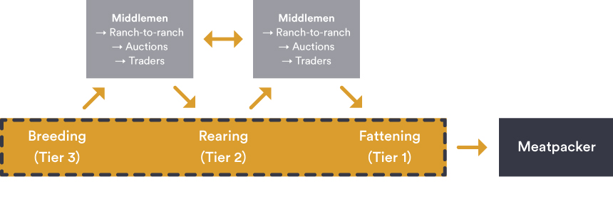
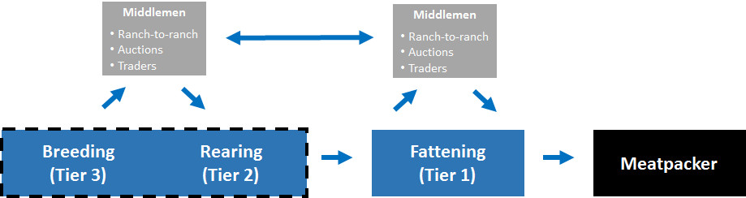
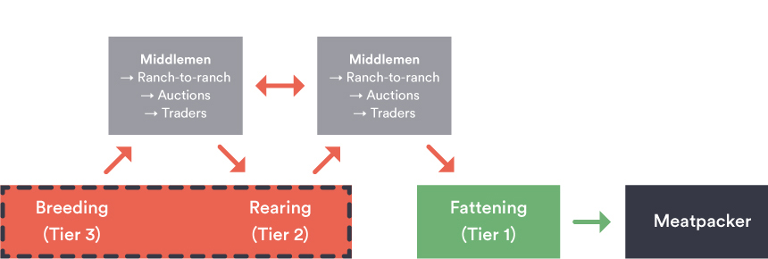
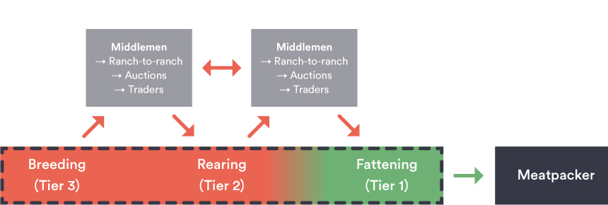

Direct vs. Indirect Suppliers: An example of a Brazilian Cattle Supply Chain (under G4 monitoring)
The cattle supply chain in Brazil is made up of a complex network of producers, which cover various segments and combinations of the three primary productions phases: (1) breeding, (2) rearing, and (3) fattening.
Production Phases
- Fattening (finishing)
- Final production phase covering cattle finishing.
- Direct suppliers (Tier 1 ranches) that sell finished cattle to meatpackers.
- Monitoring and traceability can more effectively cover cattle raised on these properties.
- Rearing (stocker)
- Intermediary phases covering early to late maturity.
- Indirect suppliers (Tier 2 ranches) that sell pre-finished cattle to fattening ranches, but transfers between different rearing operations can also occur.
- Limited (if any) monitoring and traceability on these properties currently.
- Breeding (cow-calf)
- Feeder phase covering reproduction, suckling, and early maturity.
- Indirect Suppliers (Tier 3 ranches) that sell to rearing (stocker) operations and other production phases, but transfers between breeding operations can also occur.
- Limited (if any) monitoring and traceability on these properties currently.
Cattle Supply Chains
Supply chain monitoring and traceability can be challenging for cattle production systems.
Ranches can cover various phases (and combinations of phases) of the production cycle, and therefore cattle move between multiple ranches. Transfers and movement of cattle can occur throughout every phase of the production cycle, including ranch-to-ranch transfers (in formal and informal transactions), auctions, through traders and other middlemen. This creates challenges for traceability and monitoring, especially for Tier 2 and Tier 3 suppliers. Support for efforts aimed at addressing indirect suppliers (Tier 2 and Tier 3 ranches) can help close some of the current gaps in monitoring, reduce reputational risks associated with deforestation and illegal activity, and help ensure fully verified zero deforestation supply chains for Brazilian cattle products.
The following supply chain examples help illustrate the various combinations of production systems and the complexities involved with monitoring and traceability.

Example 1: Full Cycle Production System (Breeding-Rearing-Fattening)
Full cycle ranches cover all production phases (breeding, rearing, and fattening). Relative to partial cycle systems, full cycle ranches (or aggregated production systems) offer greater coverage for monitoring and traceability. However, even ranches capable of full cycle production buy and sell cattle at different production phases, and these supplying properties may not necessarily be covered by monitoring and traceability systems.

Example 2: Partial Cycle Production System (Breeding-Rearing)

Example 3: Partial Cycle Production System (Rearing-Fattening)
Partial cycle systems cover combinations of the production phases (in this example both rearing and fattening). In this supply chain structure, cattle must move between various combinations of production phases. In addition, transfers and movement of cattle can occur between these production phases, including ranch-to-ranch transfers (in formal and informal transactions), auctions, through traders and other middlemen. These disaggregated production systems, pose significant challenges for monitoring and traceability throughout the supply chain.

Example 4: Partial Cycle Production System (Single Phase)
Partial cycle supply production systems that consist of single phase ranches represent the greatest challenges for monitoring and traceability. In this supply chain structure, cattle must move between every single production phase. In addition, transfers and movement of cattle can occur between these production phases, including ranch-to-ranch transfers (in formal and informal transactions), auctions, through traders and other middlemen. These highly disaggregated production systems, pose the most significant challenges for monitoring and traceability throughout the supply chain.